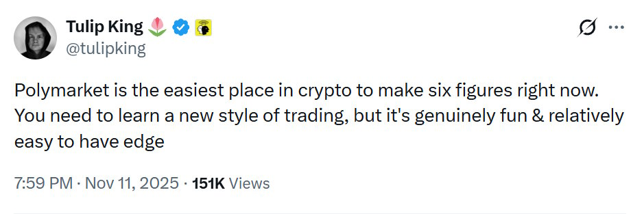
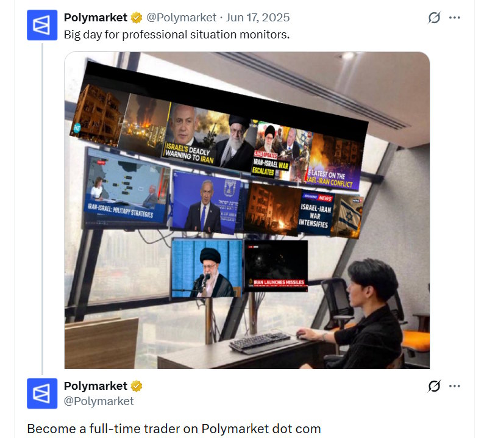
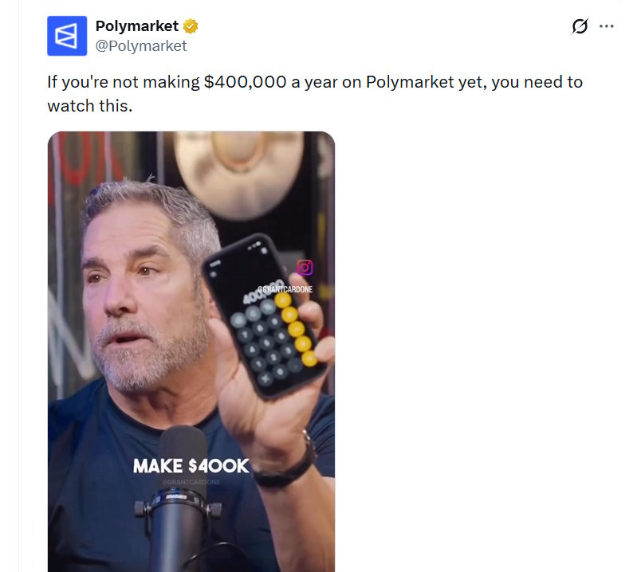

How Many Traders Are Profitable on Polymarket
How Many Polymarket Traders Make Money?
If you look at the rough ratio of winners to losers, 15.9% of Polymarket traders are in profit and 84.1% are in the red.
But…
- Only 2% of 2.5 million traders have made more than $1,000 over their trading history.
- More than $10,000 was earned by 0.32%, roughly 8,000 addresses.
- More than $100,000 was earned by 840 addresses, or 0.033% of all traders.
The chart below shows how the share of profitable traders changed from April 2024 to April 2026. Each line represents the percentage of traders who earned more than a given amount over their entire trading history.
Share of profitable Polymarket traders over time
April 2024 – April 2026. Logarithmic scale.
The decline across all profit levels is driven by user growth fueled by the November 2024 US election hype and continued momentum after it. Less experienced users tend to trade less successfully.
What Is the Average Monthly Income on Polymarket?

Trader Tulip King claims that “Polymarket is the easiest place in crypto to make six figures.” On Polymarket’s own blog, a market maker described earning $200 to $800 per day. Here is what the data shows for everyone else.
- 1.25% of traders have an average monthly profit above $1,000.
- Above $5,000 is 0.26%, about 6,600 addresses.
- Above $10,000 per month is roughly 3,250 addresses, or 0.13% of all traders.
Polymarket traders by average monthly profit
April 2024 – April 2026. Logarithmic scale.
How Long Do These Profitable Traders Actually Stay Active?
53% of these traders earned that average in a single month and 73% of traders were active for no more than two months.
Most traders show up, trade for a short period, and leave.
Only 172 addresses out of 6,600 with average profit above $5,000 were active for more than a year. That’s 2.6%.
The chart and table below provide a breakdown by number of addresses and percentages for each profit threshold and activity range.
How long do profitable Polymarket traders stay active?
Activity duration breakdown by average monthly profit threshold
What if You Quit Your Job for Polymarket?


The idea of making a living on Polymarket is so popular it has become a meme
Let’s say you read this article about how Logan Sudeith quit his job and made $100k in a month. You decide to follow his lead and want to consistently earn the average US salary of $5,000 per month trading on Polymarket. I calculated the odds of earning that amount on a regular basis.
- In any single month, 0.98% managed to earn more than $5,000.
- Two months in a row drops to 0.1%.
- Three months in a row is 0.03%.
- Four months in a row is 0.015%.
The chart below shows how many traders out of 2.5 million managed to earn more than $5,000 consistently, up to 12 consecutive months.
How many traders consistently earn ≥$5,000 on Polymarket?
Out of 2.5 million traders. Each bar = traders who maintained ≥$5K/month for at least N months in a row.
How Polymarket Could Improve the Odds
Polymarket recently launched a referral program offering 30% of trading fees generated by referred users, which means a wave of influencer-driven users is coming.


Most new traders lose money. It would be helpful if influencers promoting the platform at least taught their audience the basics: bankroll management, how prediction markets work, and why betting on impulse is a fast way to lose everything.
Polymarket itself could also do more to educate users about safe trading. One proven approach is play-money prediction markets, where users forecast events without risking real funds.
Available data from cross-platform comparisons shows that play-money markets can produce surprisingly accurate forecasts. In specialized categories like science, play-money platforms have matched or outperformed real-money markets, likely because these topics attract domain experts motivated by intellectual engagement rather than profit.
Play-money prediction markets are not subject to gambling laws, which is the legal basis for most country-level bans on Polymarket. A play-money mode could potentially give the platform access to markets it currently cannot reach.
And they could attract people who want to forecast events for reasons other than profit: intellectual interest, reputation, or proving their expertise.
None of this will fully solve the unhealthy imbalance between winners and losers. There is no magic pill. But steps toward protecting retail traders are the right way to do business for a company with Polymarket’s ambitions.
Methodology
The only other public study on Polymarket trader profitability that I found was done by blockchain analyst DeFi Oasis in December 2025. His data showed 30% of 1.7 million addresses in profit. I got 16%. Both formulas calculate realized PnL as the difference between incoming and outgoing USDC flows. But I include splits and merges, which DeFi Oasis apparently did not account for. When splits are left out, an address looks more profitable because one category of expenses is simply invisible. On top of that, the number of addresses grew from 1.7 to 2.5 million in the three months between the two studies.
All data comes from on-chain transactions on the Polygon blockchain via Dune Analytics. Polymarket uses a hybrid architecture: orders are matched off-chain through a CLOB, but every trade settles on-chain through the CTF Exchange and NegRisk CTF Exchange smart contracts.
PnL for each address is calculated as the sum of all USDC flows across five types of on-chain events: buys and sells of outcome tokens on both exchange contracts (OrderFilled), redemption of winning tokens (PayoutRedemption), splitting USDC into YES/NO token pairs (PositionsSplit), and merging them back (PositionsMerge). Ten system addresses were excluded: three Polymarket contracts and seven infrastructure wallets from DeFi Oasis’s list.
In early iterations I calculated PnL without splits and merges. That gave 10,800 addresses with monthly profit above $5,000. After adding splits and merges the number dropped to 6,600, because splits subtract USDC from a trader’s balance.
Limitations. I only count realized PnL. If a trader bought tokens on an unresolved market and hasn’t sold them, my data shows that as a loss even though the funds are simply locked. I verified that 96% of trading volume comes from already resolved markets, and the unrealized balance on resolved markets is minimal relative to total volume. All calculations use data through April 1, 2026.